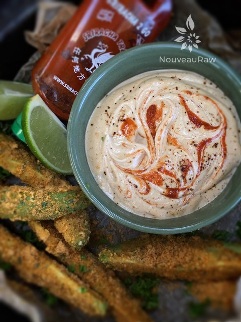
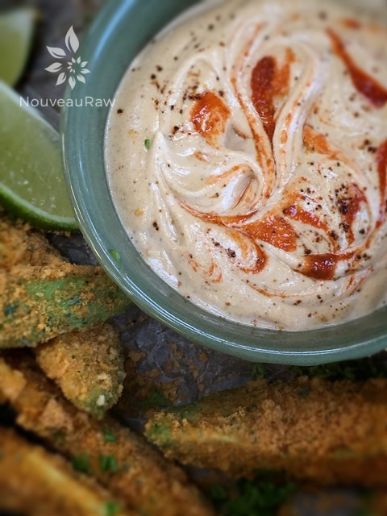

Chipotle Lime Sauce

~ raw, vegan, gluten-free ~
Chipotle chili powder has an earthy flavor with a deep smokiness that’s created during the drying and smoking process. The powder first starts off as ripe, red jalapeño peppers that have been slowly wood-smoked.
If you’re not sure if like this spice, remember that a little bit goes a long way so be sure to use a light hand. Build the flavor up if need be until it reaches the expectations of your taste buds.
A sauce with many hats.
This sauce can be used as a dip, thinned out for a dressing, or you can even use the sauce to coat kale, making a fantastic kale chip with a little heat. I love recipes that are versatile like this.
In fact, I do this with many of my recipes. The labor that it takes to make one recipe can save me a lot of time throughout the week when I divide it up, giving it new life every other day.
When I sat down to enjoy this sauce, I tried hard to remember what sauces/dips I enjoyed as a child… or shoot, even my early adult years. I came up blank. All I can recall eating is Frito Bean Dip and Ranch Dip in a jar. Other than that… my palate didn’t understand other complex flavors.
I am truly amazed as to how a simple decision to eat a high raw diet has totally changed my eating experience. It opened up a new world of ethnic flavors and has expanded my menu. Well, it’s time to let you go so you get busy in the kitchen. Many blessings, amie sue
Yields 2 cups
- 3/4 cup water
- 2 tsp lime zest
- 1 – 2 Tbsp fresh lime juice
- 1 cup raw cashews, soaked 2+ hours
- 1/2 tsp ground cumin
- 1/2 tsp chili powder
- 1/2 tsp Himalayan pink salt
- 1/2 tsp ground black pepper
- 1/2 tsp chipotle powder
- few drops of siracha
Preparation:
- It is important to soak the cashews for at least 2 hours.
- Place them in a bowl with 3 cups of warm water and let them soak for at least 2 hours.
- This will soften them which will help you achieve a creamy sauce.
- The soaking process also reduces the phytic acid, making it easier to digest.
- After soaking, drain and rinse.
- In a high-powered blender combine the; water, zest, lime juice, cashews, cumin, chili powder, salt, pepper and chipotle powder. Blend until the sauce is creamy and grit free.
- It is always best to add the liquid ingredients to the blender first. This will help the blades move more freely.
- Depending on what I have in my spice drawer, I will either use chipotle powder or smoked paprika. Love them both.
- Keep the sauce stored in the fridge in an airtight container for 5-7 days.


© AmieSue.com